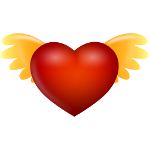

<!DOCTYPE html>
<html>
<head>
<meta charset="utf-8">
  
<title>beautifuljiao</title>
<meta name="viewport" content="width=device-width, initial-scale=1, maximum-scale=1">
<meta name="description" content="jjjjjjjjj">
<meta property="og:type" content="website">
<meta property="og:title" content="beautifuljiao">
<meta property="og:url" content="https://ou8zz.github.io/index.html">
<meta property="og:site_name" content="beautifuljiao">
<meta property="og:description" content="jjjjjjjjj">
<meta name="twitter:card" content="summary">
<meta name="twitter:title" content="beautifuljiao">
<meta name="twitter:description" content="jjjjjjjjj">
<link rel="alternate" href="/atom.xml" title="beautifuljiao" type="application/atom+xml">
<link rel="icon" href="/img/angel.png">
<link href="//fonts.googleapis.com/css?family=Source+Code+Pro" rel="stylesheet" type="text/css">
<link rel="stylesheet" href="/css/style.css">
<style type="text/css">
  .pace-done{background-color: rgb(1, 40, 51);}
  .intro{color: antiquewhite; margin-top: 10%; height: 1500px; width: 100%; }
  .intro {cursor: url("/angel.png"), default; }
</style>
  
</head>

<body id=“by” style="overflow-y: hidden; height: 100%" class="pace-done">

<div id="mydiv" style="padding: 0px; margin: 0px;"><canvas width="100%" height="100%" style="position: fixed; top: 0px; left: 0px; z-index: -2;"></canvas><div>
  <div class="intro">
   
  </div>

  <div id="tooltip"></div>
<script src="//ajax.googleapis.com/ajax/libs/jquery/2.0.3/jquery.min.js"></script>
  <script src="https://cdn.bootcss.com/jquery/3.2.1/jquery.min.js"></script>
<script src="/fancybox/jquery.fancybox.pack.js"></script>
<script type="text/javascript" src="/js/font.js"></script>
<script src="/js/script.js"></script>
<script type="text/javascript">
    //获取鼠标坐标
    function mousePosition(ev){
        ev = ev || window.event;
        if(ev.pageX || ev.pageY){
            return {x:ev.pageX, y:ev.pageY};
        }
        return {
            x:ev.clientX + document.body.scrollLeft - document.body.clientLeft,
            y:ev.clientY + document.body.scrollTop - document.body.clientTop
        };
    }

    window.onload = function(){
        //hover某处显示悬浮框
        $("body").mouseover(function(e){
            //获取鼠标位置函数
            var mousePos = mousePosition(e);
            var  xOffset = -15;
            var  yOffset = 15;
            $("#tooltip").css("display","block").css("position","absolute").css("top",(mousePos.y - yOffset) + "px").css("left",(mousePos.x + xOffset) + "px");
            $("#tooltip").append("");

        });
        //鼠标离开表格隐藏悬浮框
        $("body").mouseout(function(){
            $("#tooltip").empty();
            $("#tooltip").css("display","none");
        });

        $(".intro").flipping_text();

    //配置
    var config = {
        vx: 4,//点x轴速度,正为右，负为左
        vy:  4,//点y轴速度
        height: 2,//点高宽，其实为正方形，所以不宜太大
        width: 2,
        count: 150,//点个数
        color: "121, 162, 185",//点颜色
        stroke: "130,255,255",//线条颜色
        dist: 6000,//点吸附距离
        e_dist: 20000,//鼠标吸附加速距离
        max_conn: 10//点到点最大连接数
    }
    //调用
    CanvasParticle(config);

};


  </script>
<script src="/js/canvas.js"></script>
</body>
</html>